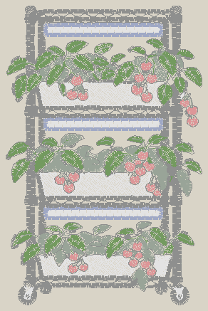
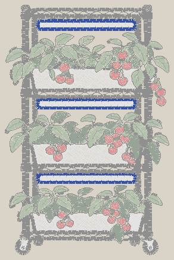
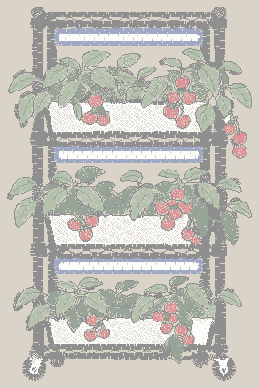
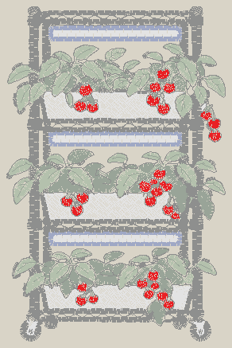
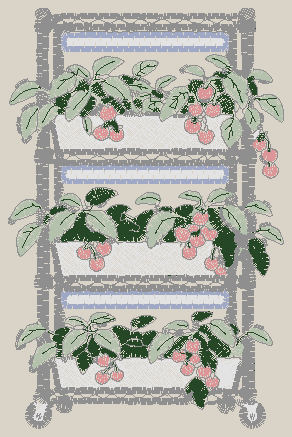
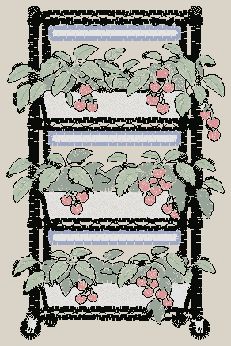

Tick each step as you go. Works offline; print it or prop a phone next to the machine.
One block per colour stop, in sewing order. The machine stops and trims at the end of each colour.






| Symptom | Likely cause | Fix | params.yaml setting |
|---|---|---|---|
| Puckering around fills | Not enough stabilizer, fabric hooped loose, or stitching too dense | Add a stabilizer layer, re-hoop drum-tight, reduce density | fill.row_spacing_mm (raise to 0.45), fill.underlay.* |
| Gaps between colours | Pull compensation too low for this fabric | Increase overlap and pull compensation, test again | general.overlap_mm (0.5), fill.pull_compensation_mm, satin.pull_compensation_mm |
| Outline does not line up with the fill | Fabric shifted in the hoop, or fills pulled in | Re-hoop with cut-away, more underlay, more compensation | fill.pull_compensation_mm, fill.underlay.edge_run_always |
| Bird-nesting under the fabric | Top thread not seated in the tension discs or take-up lever; thread caught on the spool | Rethread the top from the start, check the spool unwinds freely | (not a digitizing problem) |
| Thread breaks or shredding | Dull or wrong needle, burr on the plate, too dense or too short stitches | New needle, slow the machine, open the density | satin.spacing_mm, fill.row_spacing_mm, general.min_stitch_length_mm |
| Bobbin thread showing on top | Top tension too tight or bobbin too loose | Lower top tension one step; check the bobbin case | satin.spacing_mm (if only on satins) |
| Satin text unreadable | Letters too small for the thread | Scale the design up or simplify the text | detail.min_text_height_mm, satin.min_width_mm, --size-mm |
| Underlay shows at the edges | Underlay inset too small for this fabric | Increase the underlay insets | fill.underlay.inset_mm, satin.underlay.contour_inset_mm |
| Design off-centre on the garment | Centre mark or hoop alignment off | Re-mark, re-hoop, use trace before stitching | (machine positioning) |
| Jump threads left on top | Single-needle machine does not trim inside a colour | Trim by hand at each stop | sequence.max_travel_mm, sequence.travel_under_cover |
Stitch the design first on a scrap of the same fabric with the same stabilizer, then tick off: